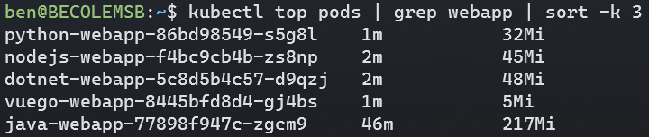
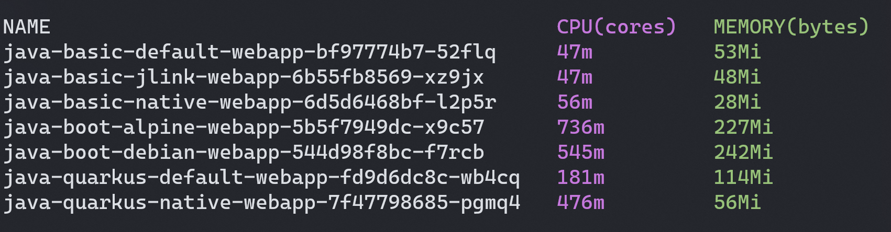
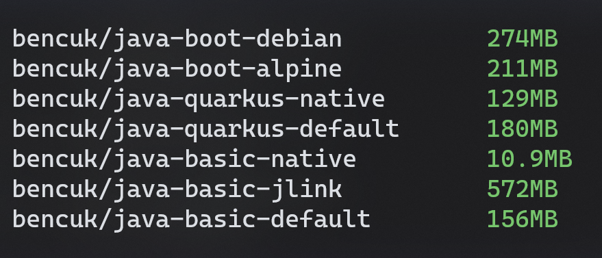
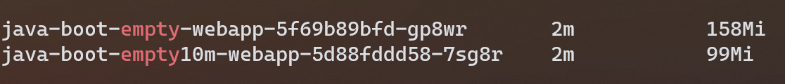

Slim Decafe Java
I've built up a small collection of simple containered web apps in a number of languages/frameworks over the last couple of years which I use for my demos. I use these especially with Azure and with Kubernetes, when I need “something” to deploy and run
I was in the process of moving these all over to Kubernetes (deployed though Helm and GitHub Actions) when I took a look at them all running side by side.
I ran kubectl top pods

The immediate thing that struck me was the huge contrast in memory usage. Each app is different of course, but broadly does the same basic thing (display some system info and resource stats, maybe a simple API for displaying the weather, none of them have any state or DB), they are little more than hello-world with some Bootstrap CSS lipstick
I tweeted about the large amount of memory Java was using, which led to some interesting responses and discussion. Eventually Bruno Borges jumped in to help. He pointed me at several things, such as the GraalVM, a framework called Quarkus and the possibility of using no framework and just using the base Java APIs.
I'd been out of the loop on Java for ~10 years, when I left it behind it was pretty overblown (ahem sorry I mean ‘Enterprise Grade’ 😉), esp. for web type work. Returning to it in 2019 I was looking for lighter “modern” ways to run Java in a more microservice style (standalone HTTP services, without an app server). When creating my demo app, I looked at two approaches Dropwizard and Spring Boot, and settled on Spring Boot as it seemed much more popular. The resulting demo app and repo is here github.com/benc-uk/java-demoapp
Bruno extremely kindly provided me with a small GitHub repo showing how the base HTTPServer class could be used to create something very lightweight. It also provided Dockerfiles for running as a regular JVM, in the GraalVM as a native executable and also using jlink to reduce the size of runtime with Java modules. The last two I had no experience of, so found having some working code and Dockerfile extremely useful
The Java Container Variants
I decided to perform a slightly scientific test, (but I stress this was FAR from being a formal rigorous benchmark) and settled on seven variations of a simple HTTP java app. I'd containerise each and deploy to Kubernetes and look at the memory usage with kubectl top pods again. The app variants were:
- Using HTTPServer, running on OpenJDK 11 JVM under Alpine (called java-basic-default)
- Using HTTPServer, running as a GraalVM native binary (called java-basic-native)
- Using HTTPServer, running on jlink'ed custom OpenJDK v14 runtime (called java-basic-jlink)
- Using Spring Boot, running on OpenJDK 11 JVM under Alpine (called java-boot-alpine)
- Using Spring Boot, running on OpenJDK 11 JVM under Debian (called java-boot-debian)
- Using Quarkus, running on OpenJDK 11 JVM under Alpine (called java-quarkus-default)
- Using Quarkus, running as a GraalVM native binary (called java-quarkus-native)
The first three came directly from Bruno's repo. The second two were my original Spring Boot demo app where I wanted to see if switching to Alpine Linux would make a difference. The last two were created from the code.quarkus.io bootstrapper, where I picked no options other than the REST client. The native Quarkus image was built using this multi-stage Dockerfile which prevented me from needing all the GraalVM stuff installed on my dev machine
Deployment
All apps were built as containers and pushed to Dockerhub. Deployment in Kubernetes was done using this generic simple Helm chart, with exactly the same resource requests/limits set on all the pods
Helm example
helm install java-boot-alpine http://code.benco.io/helm-charts/webapp-1.2.0.tgz \
--set image.repository=bencuk/java-boot-alpine \
--set service.type=LoadBalancer \
--set service.targetPort=8080
Testing
Once all were deployed, I hit them all with requests using the trusty ‘hey’ tool each for 120 seconds, hitting either root of the app or a basic route (e.g. /hello)
Hey example
hey -z 120s http://52.155.90.133/hello
Results
The results! This is what you were scrolling past everything else I've written in order to see
This screenshot was taken of kubectl top pods about 60 seconds into the load test.
First of all looking at the memory, the clear winners are the basic (HTTPServer) pods all with the smallest footprints. The GraalVM native one is particularly impressive at just 28Mi.
The Spring Boot pods both weight in at around 200Mi ~ 250Mi, the switch to Alpine makes a tiny difference but it's nothing to shout about. It's heavy either way you look at it
The Quarkus pods shows a big difference between the default (JVM) and native versions, with the native version being almost as good as the HTTPServer option (albeit with a tonne more capability of a framework)
Looking at CPU usage (which isn't where this all started, but we might as well take a look while we're here). Predictably the HTTPServer apps use the least but lets face it, they are doing practically nothing. Quarkus does OK, particularly in comparison to Spring Boot's heavy usage. Weirdly the native Quarkus app uses a lot more CPU than the JVM one, but I'm not reading too much into that, I made no attempt to look at the optimization choices or parameters when building it.
Some bonus stats, what about the Docker image sizes? This was never my main concern, as I was focused on runtime memory not disk space. Long as my image is under 200Mb I think it's OK and don't thing it's valuable to really focus on, however once you get into the gigbytes then I'm deeply worried (Yes Windows containers I'm looking at you)
Well as expected the native images come out on top, especially the basic HTTPServer one, as that used a scratch image as it's base, meaning the entire image contained just a single file, my executable. The jlink one is huge but I think that's due to something wrong with the Dockerfile (which does some creative stuff)
Conclusions
Some closing thoughts:
- Spring Boot does seem kinda chunky no matter how I look at it. It's popular for sure, but is it something you'd write a true microservice in? For traditional server side rendered “web apps” it's probably fine, but often all we need now is a lightweight REST endpoint
- I couldn't see any way to use GraalVM with Spring Boot and convert my app to something native, some googling produced “here be dragons” type results. I steered clear.
- Quarkus looks super interesting and pretty much the counter point to Spring Boot as frameworks go. It's light, optimized for cloud native and containers, designed for REST services rather than web. The bootstrap project even came with Dockerfiles, and simple docs for using with GraalVM. It's a framework I need to look into more
- Would you really write an app using HTTPServer? I don't think so. It's fun to play with, but I can't see you creating a real world/production microservice with it. The footprint was tiny, but IMO the tradeoffs are too many. I can't even serve static content such as a JS SPA which I can do with Express or Golang without a second thought
- GraalVM is an interesting development and something new to me. I'll admit the build/bundling process did seem a little arcane so I'd need to spend some more time with it before I was comfortable using it for everything. It definitely adds time to your builds, and needs a lot of compute. When building the Quarkus native image it would hammer the hell out of my CPU and bring my quad core / 16GB RAM dev machine to its knees.
Spring Boot Addendum
To validate if Spring Boot really was as hungry as I suspected, I ran a completely empty Spring Boot app, one created from the initalizer (start.spring.io) and no code added, no changes at all, other than building the app into a container image. I ran this with no JVM heap limit (the default) and with a 10Mb max heap. The later started but wouldn't accept HTTP requests. When running as pods in Kubernetes they reported around 100Mb and 150Mb of memory usage, confirming my theory that Spring Boot isn't exactly lightweight, bearing in mind there was no actual functioning code/business logic in either of these cases!
